← 返回阅读库 · 原论文目录
论文讲解阅读文档 · 表征学习 · v195
Invariant Information Clustering for Unsupervised Image Classification and Segmentation
视频时长 00:10:23；讲解文字 4,796 字符；提取讲解画面 33 张。按视频原顺序阅读，每段文字保留时间戳。
文字来自整段视频的自动语音转写，按自然停顿分段，并与 PPT / 论文页面 / 演示画面对齐。未将讲解压缩为摘要；术语、数字和口述公式请结合画面及原论文核对。 阅读稿已校正规范部分明确术语误识别；原始逐字稿和每处修改记录另行保留。
讲解画面为源视频截图（640×360），不是可编辑 PPT 文件。全片按每秒 2 帧扫描内容变化，逐步展开页保留；连续动画保留代表画面。清晰度受源视频限制。
下载完整资料包 · 含离线 HTML、PDF、Word、全部 PPT 画面和字幕。
原论文与材料
Invariant Information Clustering for Unsupervised Image Classification and Segmentation · 下载完整 PDF（10 页）
按时间阅读
00:00:00–00:00:14 · 画面 001
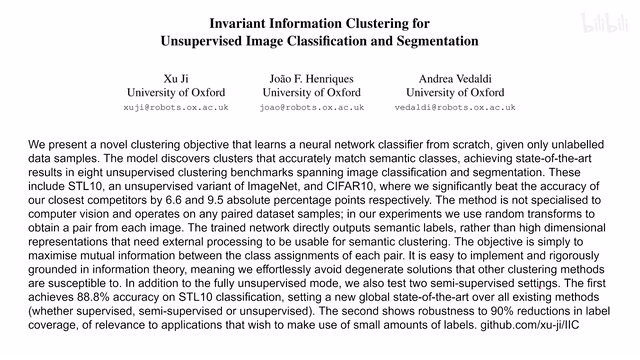
00:00:00–00:00:14 · 画面 001大家好,今天我们来快速说一篇论文 Invariant Information Clustering for Unsupervised Image Classification and Segmentation 那这篇论文呢,主要讲的是这个 Clustering,聚类的这个东西这个我们很少涉及那么下面我们就来看什么是这个 Invariant Information Clustering 那么假设呢,我们现在有一组这个样本
00:00:14–00:00:17 · 画面 002
00:00:14–00:00:17 · 画面 00200:00:17–00:00:22 · 画面 003
00:00:17–00:00:22 · 画面 003我们知道这一组样本呢它们是属于同一类的
00:00:22–00:00:26 · 画面 004
00:00:22–00:00:26 · 画面 004那么我们既然是要聚类嘛就是我们希望有一个神经网络
00:00:26–00:00:34 · 画面 005
00:00:26–00:00:34 · 画面 005能够根据比如说这个是图像把这个图像的 feature 提出来然后呢这两个图像虽然它们的实际的内容是不一样
00:00:34–00:00:44 · 画面 006
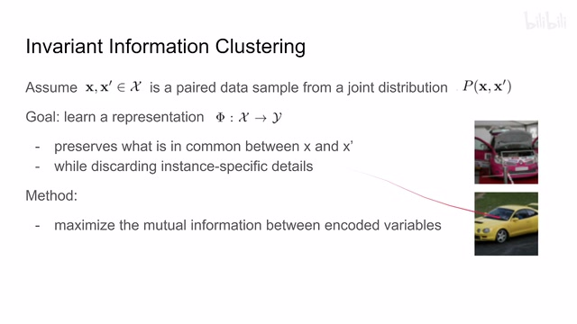
00:00:34–00:00:44 · 画面 006比如说这两个不同的车嘛但是呢我提出来的 label 是相近似的或者换句话来说呢我就是要学一个 representation它呢希望尽量保留
00:00:44–00:00:47 · 画面 007
00:00:44–00:00:47 · 画面 007这两个样本它们相似的地方然后呢去掉每个样本之间
00:00:47–00:00:49 · 画面 008
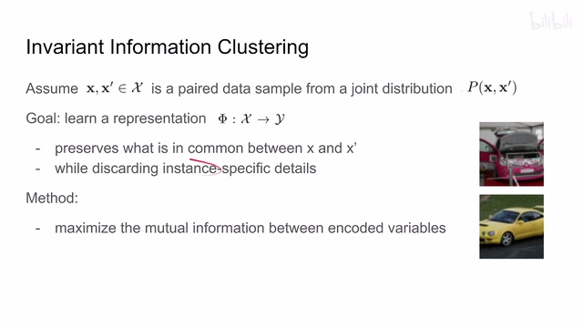
00:00:47–00:00:49 · 画面 008不同的地方
00:00:49–00:00:54 · 画面 009
00:00:49–00:00:54 · 画面 009那么这个是我们的一个目的那么为了达成这个目的
00:00:54–00:01:09 · 画面 010
00:00:54–00:01:09 · 画面 010作者说我们希望提高这两个样本它们之间的 Mutual Information更确切来说就是它们解出来这个 Representation 之后我希望这两个 Representation它们之间的 Mutual Information 提高那么这里一点背景什么是 Mutual Information Mutual Information 写成这个样子
00:01:09–00:03:09 · 画面 011
00:01:09–00:03:09 · 画面 011这是它的定义你可以看到它是一个 KL Divergence它的左边是 SY 两个样本的联合分布那右边呢是这个 x distribution 乘上这个 y distribution就是两个单独的 distribution 它们相乘那展开来写呢就是这个样子那就像这个变量它名字呢所暗示的一样mutual information 就是两个变量 xy 之间它们相互包含的信息或者换句话来说我从一个变量出发我能够多大可能的去描述另一个变量假如说这两个变量是相关的甚至完全一样那肯定的你有了一个变量另一个也就知道了但是如果这两个完全不相关你有了一个变量就完全没法猜测另一个变量就像这个雷锋和雷锋塔 Java 和 JavaScript 有什么关系没有什么关系那或者我们换个角度来理解那假设我们有两个变量它们是相互独立的随机变量
那么它们的 Joint Distribution就可以写成 Px 乘 Py因为它们是相互独立的不影响所以你可以直接把它的概率乘起来那么 Mutual Information 相当于衡量它们的真正的 Joint Distribution和它们两个完全独立的这种 Joint Distribution它们这两个 Distribution 之间这两个 Joint Distribution 之间它们的相似程度你想如果真实的 Joint Distribution完全就是这个样子那说明这两个变量是相互独立的
那这也就意味着这个 KL divergence 是低的那说明这个 mutual information 是低的那相反呢假如说他们两个非常相关你就完全不能用直接乘的这个方式来表示他们两个的这个 joint distribution所以呢这个 KL divergence 就会很高那么我的 mutual information 呢也会很高那么这个呢是一种理解那么在本文中呢我们采取的是另一种解释那可以看到这个表达是我们的这个 mutual information根据定义呢可以写成两个熵相减的形式。
那对于第一个熵来说呢，它表示这个 x 的 distribution 是否均匀我们既然是聚类问题，肯定不希望说我们所有的样本都集中到一个类上。那这倒是非常简单，大家都是一类，这有什么用呢？对吧？所以呢，我们希望这一项它的 entropy 它的熵尽量的高。同时呢，再看另一项 given y 我们得到 x 它的这个 distribution 它的这个 entropy。那么假如说 xy 它们是相互关联的。
00:03:09–00:04:04 · 画面 012
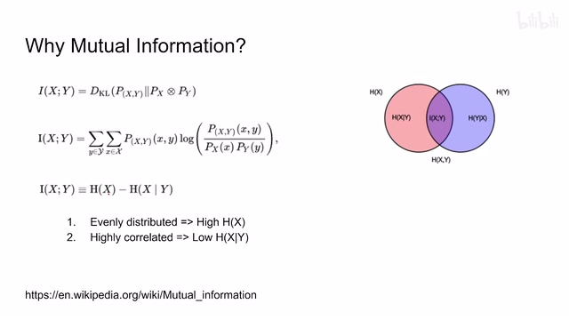
00:03:09–00:04:04 · 画面 012这个 distribution 应该就是集中在某一个位置它的概率非常高其他位置的概率非常低从 entropy 的角度来讲它含的信息就很少它的 entropy 就低所以说减的这一下它的值是低的可以看到为什么 mutual information 是个好东西因为它同时满足了我们想要增加的两个约束第一个是让我们全局的 distribution 尽量的均匀同时让我们一个 cluster 内的或者说一个 class 里面的这两个样本它们的距离相互靠近相互相关那么下面我们就来看怎么样具体利用这个 mutual information 那么要利用它我们首先要求得它根据 mutual information 的定义我们这里把它展开我们看看需要什么这里面包括一个 joint distribution
00:04:04–00:05:16 · 画面 013
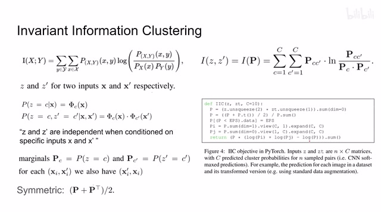
00:04:04–00:05:16 · 画面 013还有两个这个 marginal 的这个 distribution 那根据我们常年的实践我们有了这个 joint distribution 我们按照它的某一个行或者某一个列去给它求和那很容易呢我们就可以得到一个这个 marginal distribution 所以呢问题的重点在于我们怎么样去求得这个 joint distribution 那现在呢我们来看假设我们的网络呢是这个 fi 它呢其实是一个这个分类的网络你可以想象我们假如说有 C 个类 C 的数量对应我们聚类中心的数量那么我们的一个 X 进来它放到这个 C 类里面那么我们这个网络就来判断说这个 X 属于哪一个类输出之后过一个 softmax 得到这个 Z 这个 Z 你就可以把它理解成这是一个 distribution 谁的 distribution 就是我们有一个离散的随机变量它的取值就是 C 个 cluster 每一个聚类中心它可用的取值就是这些
那么它的概率分布 given x 作为 condition 的情况下我们呢这里表述为 z 那同样的这个 z prime 呢就是 x prime 啊对应出来的这个 distribution 那现在呢我们就根据这个单独的这个 distribution 来求这个 joint distribution 这里呢作者直接就是把这两个概率给它乘起来了那作者这里说呢 z 和 z prime
00:05:16–00:05:17 · 画面 014
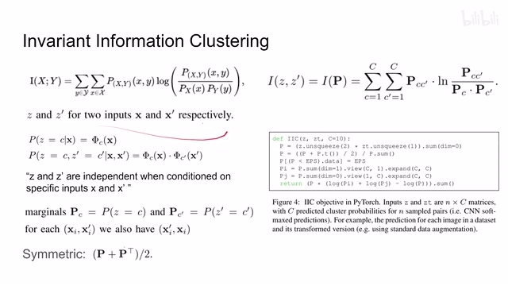
00:05:16–00:05:17 · 画面 01400:05:17–00:06:05 · 画面 015
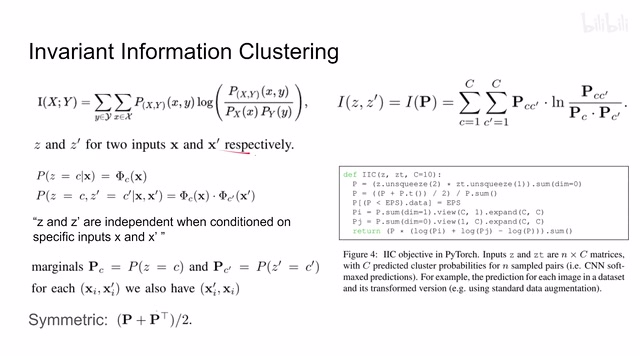
00:05:17–00:06:05 · 画面 015当我们 condition on input x 和 x' 的时候它们是相互独立的这个其实是有近似的成分作者其实说很多情况下它们其实并不能是独立的但是似乎目前我们也没有什么其他的方法来去做这个东西所以我估计这里作者就直接还是沿用了这个估计而且特别是当一开始我们这个网络还没有做训练的时候这个估计我觉得是准确的这个近似我可以认为是准确的那么总之你知道这个东西它是一个长度为 C 的一个 vector 这个东西是一个长度为 C 的 vector 它们合起来呢你可以凑出一个 C 乘 C 的这么一个矩阵来这个矩阵呢你就可以理解为它是 Z 和 Z'的这个 joint distribution 然后呢我们该求 marginal 了
00:06:05–00:06:06 · 画面 016
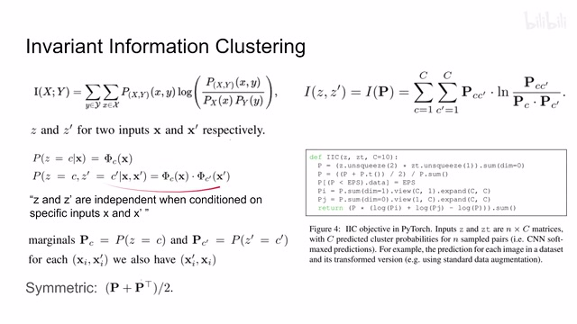
00:06:05–00:06:06 · 画面 01600:06:06–00:06:42 · 画面 017
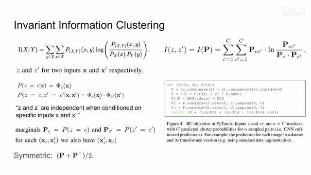
00:06:06–00:06:42 · 画面 017我们呢把它们沿着各自的这个轴求和那就可以得到这个 marginal distribution 就是这两个东西那么当然呢因为这里做着要考虑这个对称性的问题所以呢他取的是这个矩阵加上这个矩阵的转质求了一个平均用这个值来作为我们的这个 joint distribution 那么有了它呢我们就终于可以计算这个 mutual information 我们在这个矩阵它是 C 乘 C 的矩阵每一个对应的位置上按照这个公式把它这个 mutual information 计算出来
00:06:42–00:06:43 · 画面 018
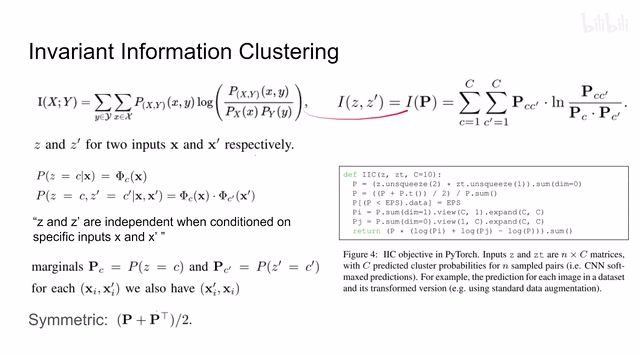
00:06:42–00:06:43 · 画面 01800:06:43–00:07:03 · 画面 019
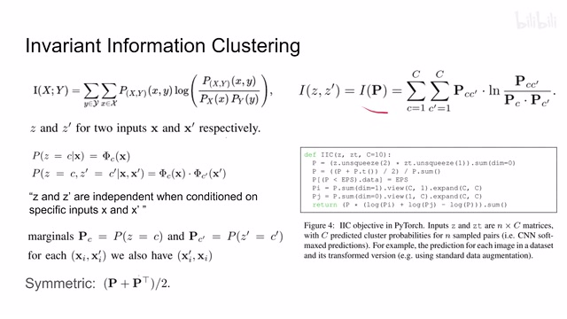
00:06:43–00:07:03 · 画面 019那得到这个值呢就是这个 invariant information clustering 那具体的你看看这里我们的 Z 和 ZT 解出来之后呢对吧他们先乘出一个 C 乘 C 的矩阵来对称然后 normalize 因为这是一个 joint distribution 这里呢是把一些太小的伏点数就替换成这个最小的伏点数然后呢求出这个 marginal distribution 最后呢再根据我们的这个 mutual information 给它求出一个 loss 出来那么我们只要不断的去提高这个 mutual information 就可以了
00:07:03–00:07:04 · 画面 020
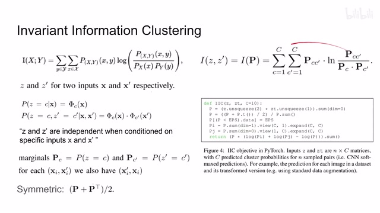
00:07:03–00:07:04 · 画面 02000:07:04–00:07:08 · 画面 021
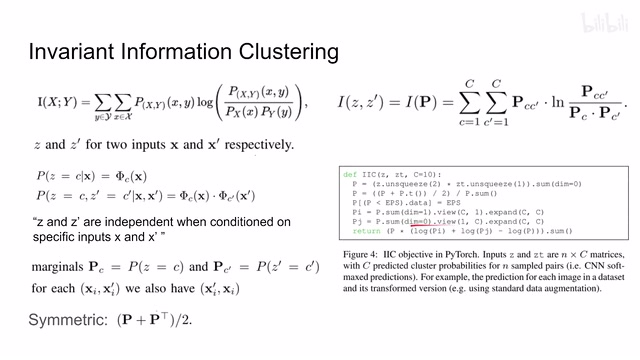
00:07:04–00:07:08 · 画面 02100:07:08–00:07:09 · 画面 022
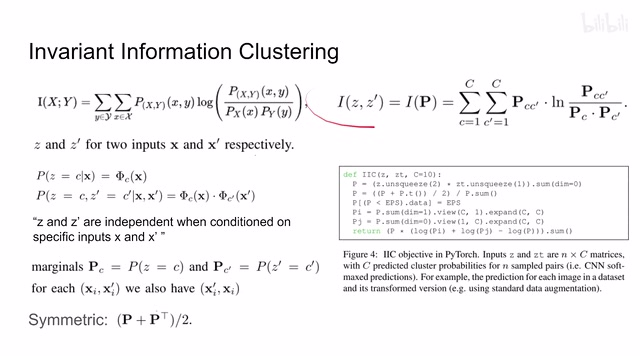
00:07:08–00:07:09 · 画面 02200:07:09–00:07:12 · 画面 023
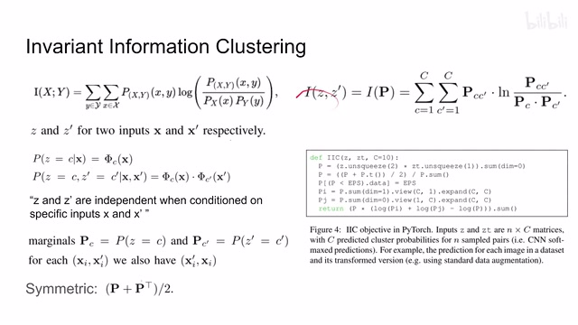
00:07:09–00:07:12 · 画面 023那么到这里呢其实我们一直回避一个很重要的问题就是一开始我们假设 X 和 X'它们是同一类的这样子呢我们去提高它们之间的这个 Mutual Information 才有意义那不然你这个不同类别呢你把它们瞎搞在一起这反而是不对的可问题就在于你不是 Clustering 这个方法吗对吧我们就等着你输入类别呢你现在告诉我你需要一个类别来训练自己这显然是没法操作的那么我们到底应该怎么样去找到这样一组样本
00:07:12–00:08:07 · 画面 024
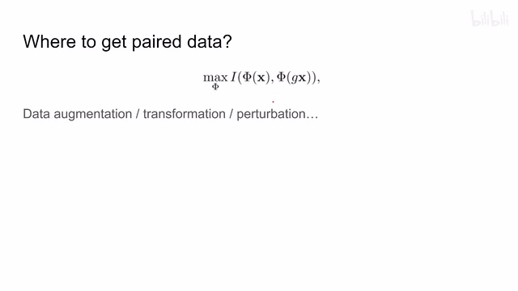
00:07:12–00:08:07 · 画面 024我们确定说这两张图像它就是来自同一类其实很简单熟悉这些 self-supervised learning 的朋友一下就想到了我们直接在原始图像上给它加一个 data transformation 或者叫 data augmentation 加一个 perturbation 等等随便什么一个名字反正你知道就是那种东西加一下它它还是原来的那张图像它们肯定还是应该被分到同一类里面这样子我们就把 paired data 给它凑出来了下面我们继续来看作者的网络结构
00:08:07–00:08:57 · 画面 025
00:08:07–00:08:57 · 画面 025这里你可以看到我们在一个图像过了这个 data augmentation 之后得到另一张图像送到同样的这个 encoder 里面然后呢送到同样的这个 classifier 这个 fully connected layer 里面过一个这个 softmax 然后呢做我们这个 IIC 最后呢得到这个 loss 然后我们去优化它就可以了你可以看到这两个分支呢他们用的是同一套的这个参数那与此同时呢作者说有些数据集里面还有一些与我们的分类聚类任务不相关的一些数据一些 distractor
那这里作者应对的策略呢就是我在这个 feature 的基础上再增加一个这个 classification 的 head 那这个增加这个 head 呢用来处理全部的这个数据集包括跟我们这个聚类相关的和聚类无关的一些数据全部都扔给它而这个聚类的 head 呢只处理我们跟聚类相关的这些数据而且这个 loss 呢用的是同一种这样子呢作者说能够提高这边聚类的性能
00:08:57–00:08:58 · 画面 026
00:08:57–00:08:58 · 画面 02600:08:58–00:09:09 · 画面 027
00:08:58–00:09:09 · 画面 027因为本质上你获得了一个更强的这个 encoder 那么这个呢就是本文的主要的技术细节那么除了在标题中我们提到这个 classification 作者还做了这个 image segmentationsegmentation 怎么做呢这里的这个每个 instance 不再是我们的一整张图像了而是我们这个大的图像中的一个小的 patch
00:09:09–00:09:11 · 画面 028
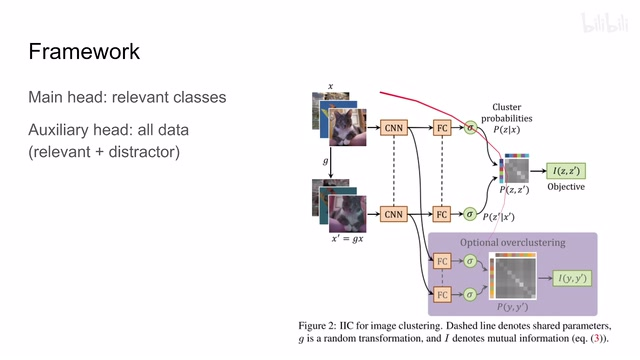
00:09:09–00:09:11 · 画面 02800:09:11–00:09:14 · 画面 029
00:09:11–00:09:14 · 画面 02900:09:14–00:09:23 · 画面 030
00:09:14–00:09:23 · 画面 03000:09:23–00:09:24 · 画面 031
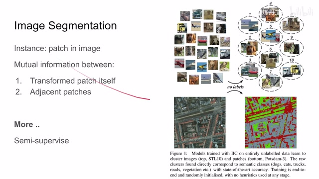
00:09:23–00:09:24 · 画面 03100:09:24–00:10:23 · 画面 032
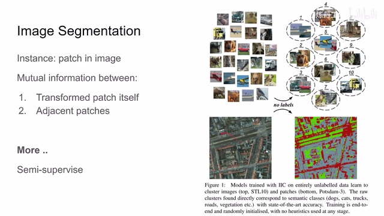
00:09:24–00:10:23 · 画面 032同时我们 Mutual Information 不仅跟这个 patch 自己计算，同时作者认为说这个 patch 周围的一些 patch，它们表达的语义信息应该是相近的，它们的 feature 也应该尽量相似。所以作者还把相邻的这些 patch 也作为我们的 pair 一起送进来。所以对于每一个 patch 来说，你看到的不仅是一个 CxC 的矩阵，同时它有很多个 CxC 的矩阵，跟自己比，跟它周围的这些 patch 比。
这个是作者怎么样把这个框架应用到我们的图像的分割问题上。那么最后作者还做了一些关于半渐度的实验，还是非常推荐你去阅读原文查看它的各种实验配置还有结果。包括这些文章的代码的结构整理的也是非常清晰，本质上也不是一个复杂的方法。那么还是推荐感兴趣的朋友去查看它一手的资料。好的，那么以上就是我对这个论文的一个快速的整理。那么感谢您的收看，再见。
00:10:23–00:10:23 · 画面 033
00:10:23–00:10:23 · 画面 033转写与来源说明 · 23 个自动复核提示
保留 94 个原始语音片段，23 个片段触发自动复核提示。提示仅用于定位可能的术语、重复或识别问题，不等于已确认错误。
讲解画面为源视频截图（640×360），不是可编辑 PPT 文件。全片按每秒 2 帧扫描内容变化，逐步展开页保留；连续动画保留代表画面。清晰度受源视频限制。
原视频：paper/合集_2026-10-16_表征学习/[论文速览]Invariant Information Clustering for Unsupervised Image...[1807.06653].mp4
SHA-256：15549e2e7ecba456292dc530541ec478847fea8885fd5cd5d7be65d36454aa7c
什么是 Mutual Information
这种 Joint Distribution
你想如果真实的 Joint Distribution
这个 KL divergence 是低的
那说明这个 mutual information 是低的
那相反呢
假如说他们两个非常相关
你就完全不能用直接乘的这个方式
来表示他们两个的这个 joint distribution
所以呢
这个 KL divergence 就会很高
那么我的 mutual information 呢
也会很高
那么这个呢
是一种理解
那么在本文中呢
我们采取的是另一种解释
那可以看到
这个表达是
我们的这个 mutual information
根据定义呢
可以写成两个熵相减的形式。
那对于第一个熵来说呢，
全文按视频语音与画面制作。原论文可从上方链接下载；完整资料包保留全文、原始逐字稿、字幕和校对记录。